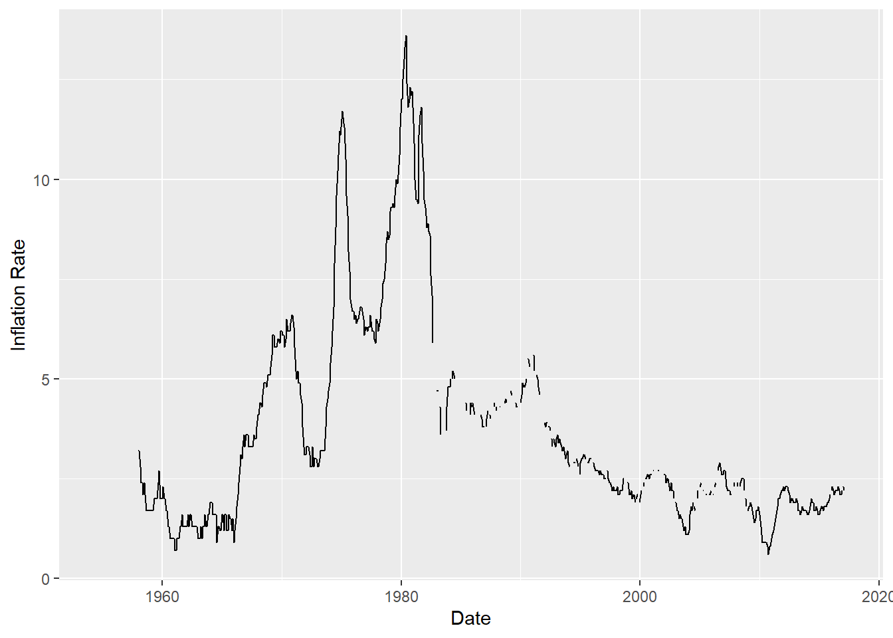
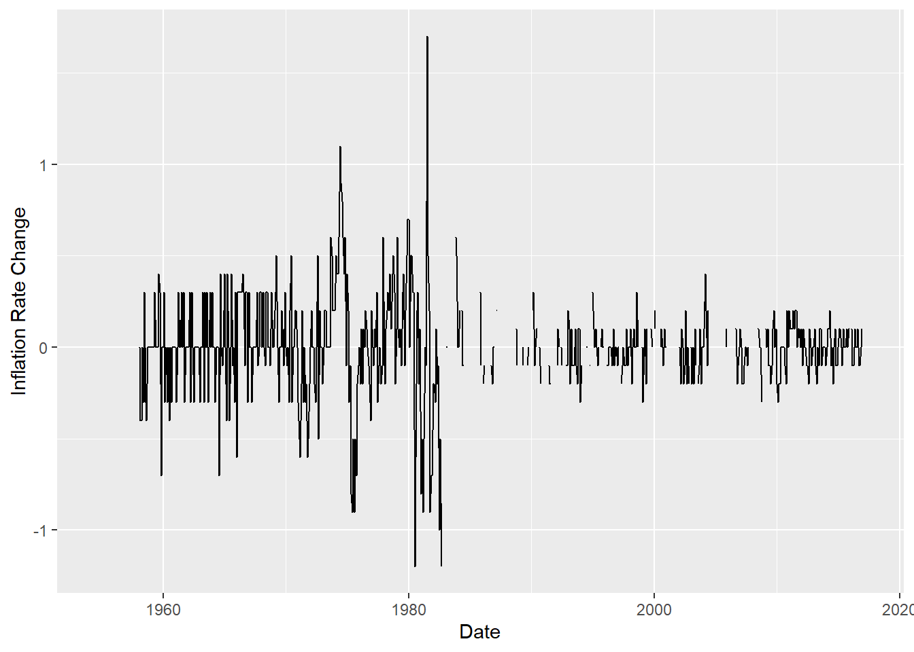

library(tidyverse)
library(ggplot2)
knitr::opts_chunk$set(echo = TRUE, warning=FALSE, message=FALSE)Challenge 6 Submission
challenge_6
fed_rate
Visualizing Time and Relationships
Read in data
The data that I chose to read in was the RedFundsRate.csv
- fed_rate ⭐⭐
fed_rate <- read_csv("_data/FedFundsRate.csv")
fed_rate# A tibble: 904 × 10
Year Month Day `Federal Funds Target Rate` `Federal Funds Upper Target`
<dbl> <dbl> <dbl> <dbl> <dbl>
1 1954 7 1 NA NA
2 1954 8 1 NA NA
3 1954 9 1 NA NA
4 1954 10 1 NA NA
5 1954 11 1 NA NA
6 1954 12 1 NA NA
7 1955 1 1 NA NA
8 1955 2 1 NA NA
9 1955 3 1 NA NA
10 1955 4 1 NA NA
# ℹ 894 more rows
# ℹ 5 more variables: `Federal Funds Lower Target` <dbl>,
# `Effective Federal Funds Rate` <dbl>, `Real GDP (Percent Change)` <dbl>,
# `Unemployment Rate` <dbl>, `Inflation Rate` <dbl>Briefly describe the data
Tidy Data (as needed)
The only variable I needed to mutate was the Year, Month and Day into a single date object. I first combined them into one column, then used the as.Date function.
date_col <- paste(fed_rate$Year, fed_rate$Month, fed_rate$Day)
date_col <- as.Date(date_col, format = "%Y %m %d")
head(date_col)[1] "1954-07-01" "1954-08-01" "1954-09-01" "1954-10-01" "1954-11-01"
[6] "1954-12-01"fed_rate <- fed_rate[-c(1, 2, 3)]
fed_rate <- fed_rate %>% add_column(`Date`=date_col, .after=0)
head(fed_rate)# A tibble: 6 × 8
Date `Federal Funds Target Rate` `Federal Funds Upper Target`
<date> <dbl> <dbl>
1 1954-07-01 NA NA
2 1954-08-01 NA NA
3 1954-09-01 NA NA
4 1954-10-01 NA NA
5 1954-11-01 NA NA
6 1954-12-01 NA NA
# ℹ 5 more variables: `Federal Funds Lower Target` <dbl>,
# `Effective Federal Funds Rate` <dbl>, `Real GDP (Percent Change)` <dbl>,
# `Unemployment Rate` <dbl>, `Inflation Rate` <dbl>The variables that I mutated were most of the rates. This included the Effective Fed Funds Rate, Unemplyoment Rate, and Inflation Rate. I mutated these to allow us to compare how they changed through the years and graphing them a bit simpler.
These new variables were created by the diff command, and can be seen in the last 3 columns.
effective_fed_fund_change <- diff(fed_rate$`Effective Federal Funds Rate`)
effective_fed_fund_change <- append(effective_fed_fund_change, NA, after=0)
fed_rate['Effective Fed Funds Rate Change'] <- effective_fed_fund_change
unemployment_change <- diff(fed_rate$`Unemployment Rate`)
unemployment_change <- append(unemployment_change, NA, after=0)
fed_rate['Unemployment Rate Change'] <- unemployment_change
inflation_rate_change <- diff(fed_rate$`Inflation Rate`)
inflation_rate_change <- append(inflation_rate_change, NA, after=0)
fed_rate['Inflation Rate Change'] <- inflation_rate_change
head(fed_rate)# A tibble: 6 × 11
Date `Federal Funds Target Rate` `Federal Funds Upper Target`
<date> <dbl> <dbl>
1 1954-07-01 NA NA
2 1954-08-01 NA NA
3 1954-09-01 NA NA
4 1954-10-01 NA NA
5 1954-11-01 NA NA
6 1954-12-01 NA NA
# ℹ 8 more variables: `Federal Funds Lower Target` <dbl>,
# `Effective Federal Funds Rate` <dbl>, `Real GDP (Percent Change)` <dbl>,
# `Unemployment Rate` <dbl>, `Inflation Rate` <dbl>,
# `Effective Fed Funds Rate Change` <dbl>, `Unemployment Rate Change` <dbl>,
# `Inflation Rate Change` <dbl>Time Dependent Visualization
For the time dependent I chose to graph the inflation rate.
ggplot(fed_rate, aes(x=`Date`, y=`Inflation Rate`)) +
geom_line()
I chose to do a line graph because I believe it is the best way to graph a time-dependent variable. It offers a good visualization of how the inflation rate from year to year is fairly constant, aside from a few hiccups.
I chose to not include the points as I thought they made the graph too noisey and took away from the finer details.
Visualizing Part-Whole Relationships
For the Part-Whole Relationship Visualization, I chose to graph inflation rate change over the samples given.
#rates <- fed_rate %>% select(`Effective Federal Funds Rate`, `Unemployment Rate`, `Inflation Rate`)
#fed_rate$`Inflation Rate Change`
ggplot(fed_rate, aes(x=`Date`, y=`Inflation Rate Change`)) +
geom_line()
I chose a line graph because it made the most logical sense on how to graph a variable where we are trying to see the change over a period of time. It also allows the viewer to see a nice progression of how the inflation rate change stays fairly constant over the years.
Similarly I omitted the dots because they were too large for how many points I had.